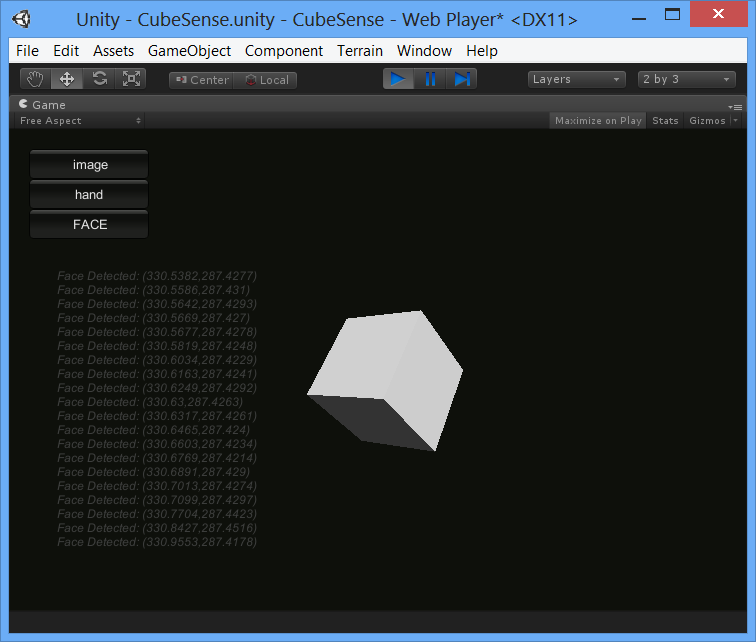

This sample FF_CubeSense shows how to run the SDK with the Unity game engine supporting the web player platform. The sample requires Unity v4.1.0 or later.
Copy the sample source to a writable folder and double click Assets/CubeSense.unity to launch the Unity editor, and then run the game. The screen shot is similar to Figure 161 (in Unity Editor) or Figure 162 (in an internet browser). By default, the sample initializes to run face tracking only. Click the buttons on the left upper corner to switch to the hand tracking mode, or adding the image display mode.
 The image mode is a stretch for the network transmission bandwidth. The application will slow down significantly with constant image streaming.
The image mode is a stretch for the network transmission bandwidth. The application will slow down significantly with constant image streaming.
The script SenseInput.cs initializes the camera streaming, face and hand tracking. When there are available data (samples from the camera, or data from face tracking or hand tracking), the script sends events to the CubeMotion.cs script.
The script CubeMotion.cs visualizes face and hand tracking data. The script visualizes the face tracking data by pointing the cube to the normalized view port position of the detected nose position coordinates. The script visualizes the hand tracking data by rotating the cube left if the detected hand position is at the left side of the screen, and rotating the cube right if the hand position is at the right side.
The script TextWindow.cs prints out the detected face and hand tracking data using a grayed color in the background.

Figure 161: The CubeSense Sample Window in Unity Editor
Figure 162: The CubeSense Sample Window in the Google Chrome Browser
 If you see a warning message "NullReferenceException: Object reference not set to an instance of an object UnityEditor.DockArea.OnGUI()" while running your application in Unity Editor, close the Game and Scene windows and redo the window layout. The warning message should go away after the layout change. See also http://neareal.net/index.php?ComputerGraphics%2FUnity%2FTips%2FError%20UnityEditor.DockArea.OnGui() (In Japanese.)
If you see a warning message "NullReferenceException: Object reference not set to an instance of an object UnityEditor.DockArea.OnGUI()" while running your application in Unity Editor, close the Game and Scene windows and redo the window layout. The warning message should go away after the layout change. See also http://neareal.net/index.php?ComputerGraphics%2FUnity%2FTips%2FError%20UnityEditor.DockArea.OnGui() (In Japanese.)